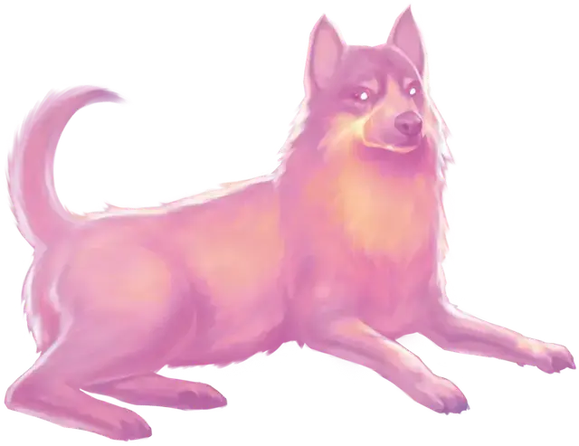

Заданная иллюзия
Programmed Illusion
6 уровень, Иллюзия

Время сотворения 1 действие
Дистанция 120 футов
Компоненты В, С, М (кусок овечьей шерсти и порошок нефрита, стоящий как минимум 25 зм)
Длительность Пока не рассеяно
Классы Бард, Волшебник
Вы создаёте иллюзию предмета, существа или другого видимого явления в пределах дистанции, активирующуюся при выполнении особых условий. Пока условия не выполнены, иллюзия будет неразличима. Она должна помещаться в куб с длиной ребра 30 футов, и вы при накладывании заклинания определяете, как иллюзия будет себя вести, и какие звуки она будет издавать. Заготовленные действия могут длиться до 5 минут.
Когда указанное вами условие будет выполнено, иллюзия проявляется и выполняет описанные вами действия. Как только иллюзия закончит действовать, она исчезает и остаётся спящей 10 минут. После этого иллюзия может быть снова активирована.
Условие может быть простым или замысловатым, но оно должно основываться на видимом или слышимом событии, способном произойти в пределах 30 футов от области. Например, вы можете создать иллюзию себя, появляющегося и предупреждающего тех, кто попытается открыть дверь с ловушкой, или же иллюзия может проявляться только когда существо произносит правильное слово или фразу.
Физическое взаимодействие с образом даёт понять, что это иллюзия, потому что сквозь него всё проходит. Существа, исследующие образ действием, могут определить, что это иллюзия, совершив успешную проверку Интеллекта (Расследование) против Сл ваших заклинаний. Если существо распознаёт иллюзию, оно может видеть сквозь неё, и издаваемые ей звуки тоже становятся незначащими.